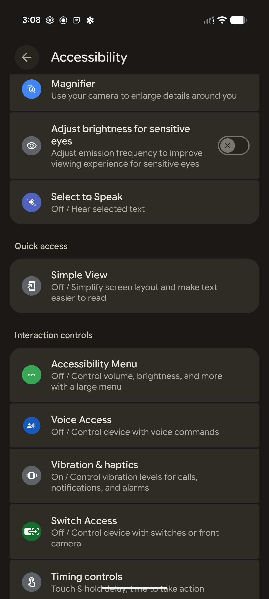
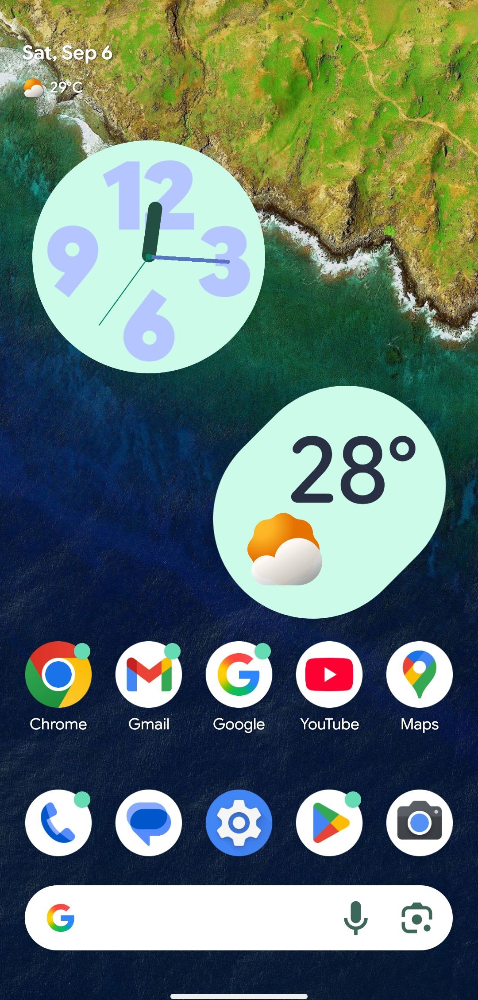
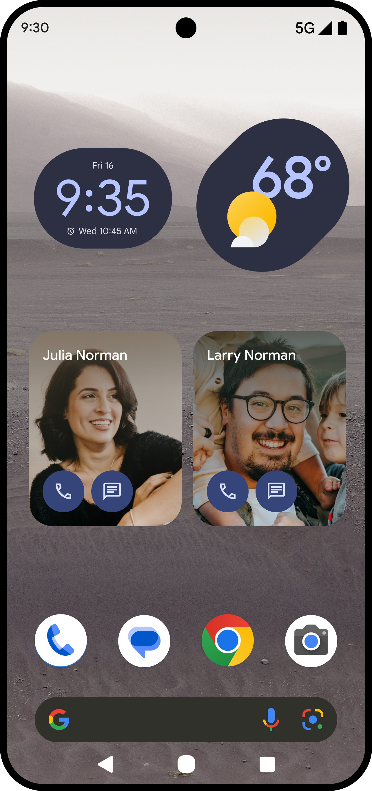

The Challenge
Pixel was performing well in Japan, but we were missing a large and growing segment of the market: older adults. The assumption going in was that the problem was complexity — that the standard smartphone experience was simply too much. What research revealed was more interesting, and more actionable than that.
Discovery & Research
We conducted research across Japan — interviewing older adults, consulting with academics on aging, and visiting an organization dedicated to helping seniors navigate technology. What we found upended the premise of the project.
These users weren't struggling with capability. They were struggling with confidence. At the senior technology center, most attendees were genuinely phone-literate — they used their phones regularly and well. What they wanted wasn't a simplified phone. They wanted reassurance. Sessions were full of "I did this — is that okay?" The answer was almost always yes. They just needed someone to confirm it.
One woman's story captured it perfectly. She loved going to the theater. She'd use her phone to browse what was playing, choose a show, map the route, and make a restaurant reservation for after. But she wouldn't buy the tickets online. She'd walk to the local convenience store to complete that transaction in person. The phone wasn't the barrier. Trust in irreversible actions was. She didn't need a simpler phone — she needed a clearer, more legible one that didn't make her second-guess herself.
This reframed the entire design brief. The goal wasn't to reduce what the phone could do. It was to make what the phone did feel legible, predictable, and safe — especially for first-time interactions. And critically: older adults in Japan didn't think of themselves as disabled or in need of special accommodations. They would never seek out a setting labeled "Accessibility." Whatever we built had to feel like a mainstream choice, not a workaround.

Focus group research in Japan. The sessions consistently showed phone-literate users who wanted confidence and legibility, not a stripped-down experience.
Designing Against Stigma
The first version of Simple View lived inside the Accessibility menu. It was the obvious home for it — and it was wrong. Users who needed it most never found it, because they never opened Accessibility settings. They didn't think of themselves as someone who needed accessibility features.
The naming created friction internally too. "Why Simple?" was a common reaction from dogfooders — the implication being that calling something simple was condescending. That tension was real and worth taking seriously. But it also confirmed what the research had shown: any label that signaled "this is for people who struggle" was going to be avoided by the exact people we were designing for. The solution wasn't to rename it. It was to reposition it — to move Simple View out of the category of workaround and into the category of choice.
The pivot was to move Simple View into the main phone setup wizard, presenting it as a standard option at the moment of first use — before any habits formed, before anyone felt lost, before the phone had established itself as something to navigate around. This also let us pre-select a helpful set of home screen icons, reducing the blank-slate overwhelm of a new device from the very first screen.

Simple View in its original home — buried inside the Accessibility menu, below options most older adults would never associate with themselves. Users who needed it most never found it.


Simple View moved from a buried Accessibility setting to a prominent option in the initial setup wizard — presented as a standard choice, not a special accommodation.
Solution & Impact
Simple View delivers a clean home screen with large icons and text, 3-button navigation, and an enhanced keyboard. The feature itself wasn't complicated. What made it work was where it lived — presented during setup as an equal option alongside the standard experience, with no stigma attached and no settings menu to excavate.
At selected carrier retail locations outside Tokyo, conversion reached 80%. Store staff could hand a customer a phone in setup mode, let them choose Simple View themselves, and watch them immediately feel at home on a device they'd been hesitant about.


The same phone, two different experiences. Simple View isn't a stripped-down version — it's a legibility-first layout that gives users confidence from the first screen.
"It made the phone look less cluttered and simpler to use."
User Feedback
What I'd Take Forward
The most important design decision on this project wasn't visual — it was placement. Where a feature lives shapes who feels permitted to use it. Putting Simple View in Accessibility sent a signal that only certain kinds of people should consider it. Putting it in setup made it a preference, not a concession.
That principle applies well beyond this project. Any time you're designing for a group that doesn't identify with the label you've given them — older adults who don't consider themselves elderly, people with low vision who don't consider themselves disabled, non-native speakers who don't consider themselves limited — the solution is rarely about the feature itself. It's about removing the friction of self-identification that stands between the user and something that would genuinely help them.
If you're working on products where that gap exists, I'd like to hear about it.